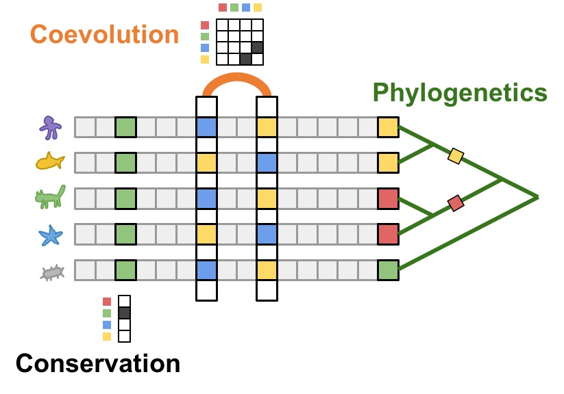
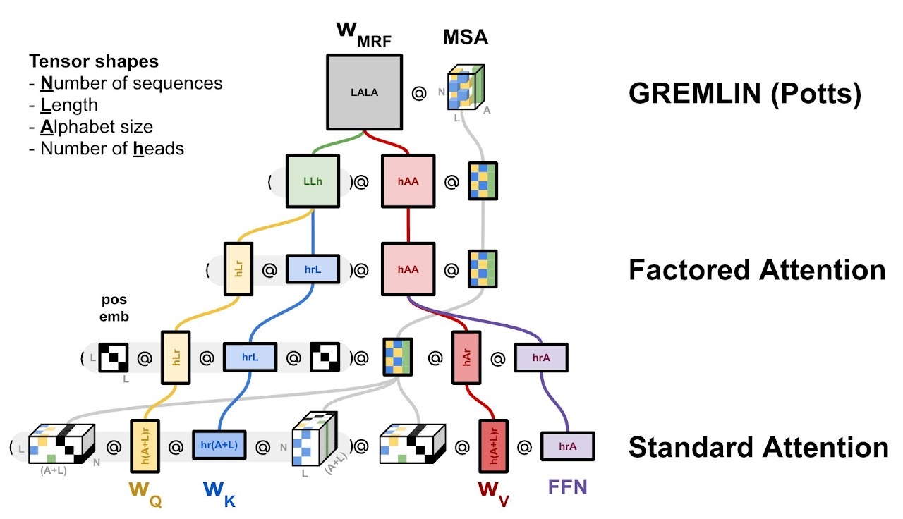
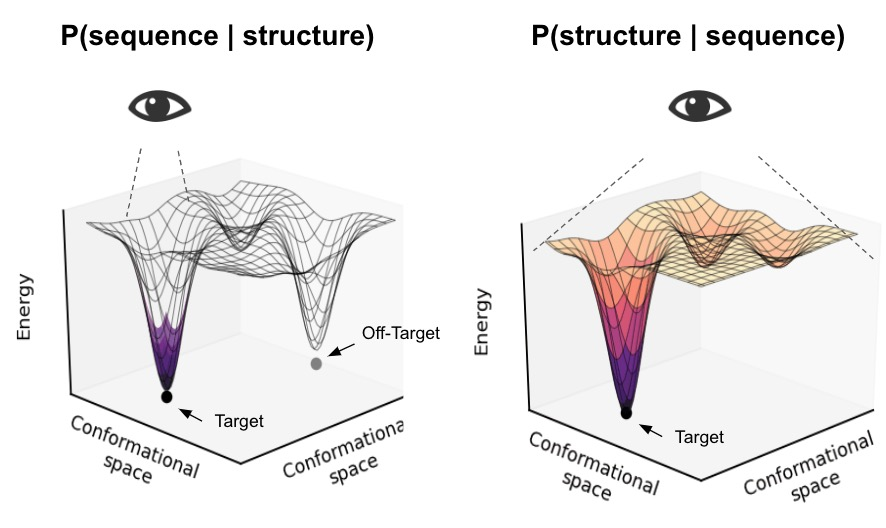
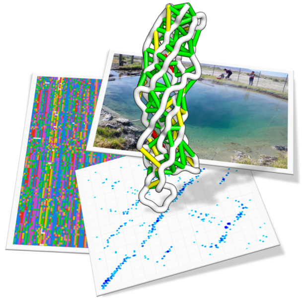
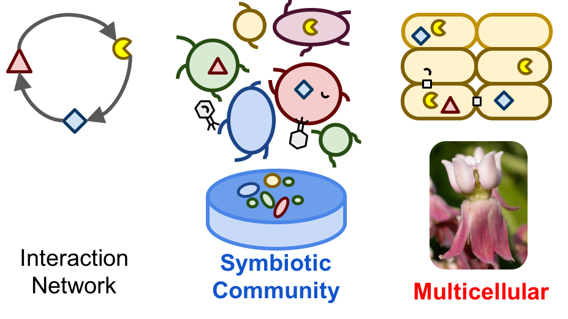

A unified statistical model of protein evolution — integrating phylogenetic, genomic, structural, and functional constraints.


For billions of years, nature has been conducting the greatest experiment of all time. Imagine one-day gaining access to the detailed notes from these experiments. Today, with worldwide expeditions to collect samples from all habitats, single-cell sequencing of unculturable microbes and the rapid drop in sequencing costs, we can finally tap into nature and gain access to these notes.
Making use of this data, our lab is interested in:



image credit: Basile Wicky

